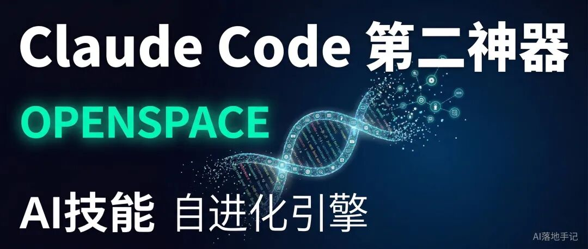

上一篇拆了Superpowers——14个技能让AI学会先想后做、自己测试、自己审查。
今天聊第二个神器：OpenSpace。

一句话解释：
Superpowers教AI"怎么工作"，OpenSpace教AI"怎么进化"。
Superpowers是固定的14个技能，装上就有。OpenSpace不一样——它是一个技能进化引擎。AI在执行任务的过程中，会自动把成功的工作模式封装成新技能，下次遇到类似任务直接复用，不再从零开始。
用得越多，技能库越大，token消耗越少，效果越好。
官方benchmark数据：同样的任务，装了OpenSpace的AI比没装的赚4.2倍的钱，同时省46%的token。
— — —
OpenSpace解决了什么问题？
AI最大的浪费不是"不够聪明"，是每次都从零开始。
你让AI部署一个网站，它花20分钟搞定了。过两天你让它部署另一个网站，它又从零开始推理，又花20分钟。哪怕两次部署的步骤99%相同。
因为AI没有"经验"。它不会把第一次的成功模式存下来，第二次直接套用。
— — —
1. 自进化（Self-Evolution）
AI执行任务时，OpenSpace在后台做三件事：
AUTO-FIX — 技能执行失败？自动分析原因，自动修复
AUTO-IMPROVE — 执行成功？分析模式，生成更好的技能版本
AUTO-LEARN — 发现新工作流？自动捕获，封装成新技能
不需要你手动封装。AI自己用、自己学、自己封装。
真实例子：
第1次让AI监控Docker容器 -> 从零推理，50个步骤，大量token
-> OpenSpace自动捕获工作流，生成技能 docker-monitor
第2次同样任务 -> 匹配到技能，5个步骤搞定，token降80%
第3次Docker API更新了 -> 旧技能报错 -> 自动修复，无需人工
用 -> 学 -> 存 -> 复用 -> 遇到问题 -> 自动修 -> 继续进化。
— — —
2. 技能共享（Collective Intelligence）
OpenSpace有一个云端技能社区（open-space.cloud）。
你的AI学会了新技能
-> 上传到社区（公开/私有可选）
-> 别人的AI搜到这个技能
-> 直接下载使用
-> 在使用中进一步进化
-> 上传更好的版本
一个AI学会的东西，所有AI都能用。
— — —
3. 省钱（Token Efficiency）
50个真实商业任务的benchmark数据：
指标 | 没装OpenSpace | 装了OpenSpace |
任务收益 | 基准 | 4.2倍 |
Token消耗 | 基准 | 减少46% |
合规类任务 | 基准 | +18.5% |
工程类任务 | 基准 | +8.7% |
文档类任务 | 基准 | token减少56% |
包括：工会合同工资计算、15份PDF报税材料整理、隐私法规备忘录、合规表单。都是真实商业场景。
AI越用越便宜，因为重复工作不再烧token。
— — —
技术架构：它怎么做到的
OpenSpace以MCP Server的形式接入AI agent。提供4个工具：
execute_task — 执行任务（核心）
search_skills — 搜索技能库
fix_skill — 手动修复技能
upload_skill — 上传技能到社区
— — —
execute_task：核心执行流程
任务进来
-> 1. 搜索技能库（本地+云端）
-> 2. 找到匹配技能？
-> YES -> 按技能执行（省token）
-> NO -> 纯工具执行（从零推理）
-> 3. 执行完毕，分析结果
-> 4. 自动进化：
成功 -> AUTO-IMPROVE + AUTO-LEARN
失败 -> AUTO-FIX 后重试
-> 5. 返回结果 + evolved_skills列表
调用方式：
execute_task(
task="监控Docker容器，找到内存最高的，优雅重启",
search_scope="all", # 搜本地+云端
max_iterations=20
)
返回结果包含进化信息：
{
"status": "success",
"evolved_skills": [{
"name": "docker-memory-restart",
"origin": "captured",
"change_summary": "从Docker监控任务中捕获",
"upload_ready": true
}]
}
— — —
search_skills：混合排名搜索
不是简单关键词匹配，是多层排名：
BM25全文检索 -> Embedding语义重排 -> 词法加权
search_skills(
query="自动化部署带回滚",
source="all",
auto_import=True # 自动下载云端技能到本地
)
auto_import=True：搜到云端技能后自动下载到本地，下次直接用不再需要网络。
— — —
upload_skill：回馈社区
场景 | 操作 |
技能来自云端社区 | 改进后upload回去（public） |
通用改进 | public，大家都能用 |
项目专属 | private，或不上传 |
— — —
实际配置：怎么装
Step 1：安装
git clone https://github.com/HKUDS/OpenSpace.git
cd OpenSpace
pip install -e .
openspace-mcp --help # 验证安装
Step 2：配置MCP Server
{
"mcpServers": {
"openspace": {
"command": "openspace-mcp",
"timeout": 600,
"env": {
"OPENSPACE_HOST_SKILL_DIRS": "/你的AI技能目录",
"OPENSPACE_WORKSPACE": "/OpenSpace安装路径",
"OPENSPACE_API_KEY": "sk-xxx（可选）"
}
}
}
}
关键参数：
OPENSPACE_HOST_SKILL_DIRS — AI agent的技能目录
OPENSPACE_API_KEY — 云端社区key，去 open-space.cloud 注册。不配也行
timeout: 600 — 复杂任务可能跑几分钟
Step 3：复制两个技能文件
cp -r OpenSpace/openspace/host_skills/delegate-task/ /你的技能目录/
cp -r OpenSpace/openspace/host_skills/skill-discovery/ /你的技能目录/
这两个文件告诉AI什么时候该用OpenSpace。装完自动生效。
Step 4：选择后端模型
OpenSpace需要一个LLM驱动执行。可以用任何OpenAI兼容API：
"OPENSPACE_MODEL": "openai/gpt-4o",
"OPENSPACE_LLM_API_KEY": "sk-xxx",
"OPENSPACE_LLM_API_BASE": "https://api.openai.com/v1"
也支持国产模型（豆包、通义千问等），只要兼容OpenAI接口。我用的是豆包——便宜且够用。
— — —
Superpowers + OpenSpace：组合拳
Superpowers — 教AI"怎么工作"
14个固定技能：先想后做、TDD、debug、验证、审查
OpenSpace — 教AI"怎么进化"
技能越用越多，token越用越省，社区共享
Superpowers保证质量，OpenSpace保证效率。一个管"做得对"，一个管"做得快"。
实际工作流：
需求进来
-> Superpowers brainstorming 分析需求
-> Superpowers writing-plans 拆任务
-> 执行时 OpenSpace 搜索现成技能
-> 有 -> 直接复用，省80%时间
-> 没有 -> 从零执行，完成后自动封装
-> Superpowers verification 确保质量
-> 下次类似任务，直接走技能
— — —
写在最后
OpenSpace的核心理念：
让AI的每一次工作都变成下一次工作的经验。
和人一样——新人第一天什么都慢，干了三个月就成老手了。不是因为变聪明了，是因为积累了经验，重复的事不用再想。
OpenSpace就是AI的"经验积累系统"。
— — —
OpenSpace开源地址：github.com/HKUDS/OpenSpace
云端技能社区：open-space.cloud
— — —
— — —
关注「AI落地手记」，后续干货满满。
不卖课，不吹牛，只写自己真正在用的东西。